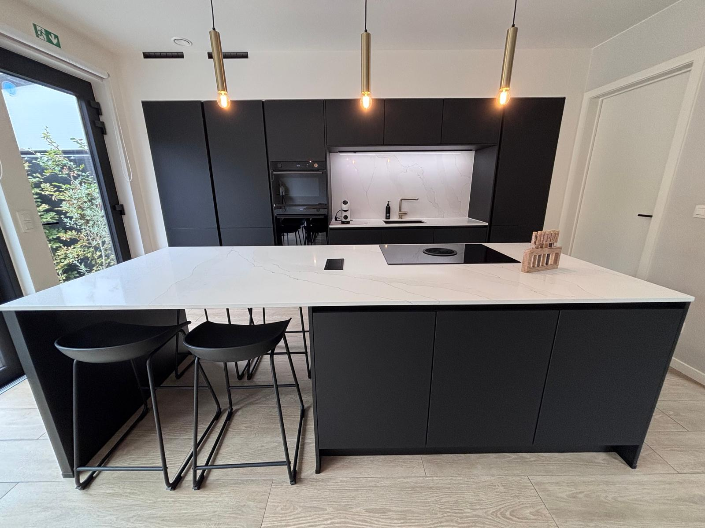
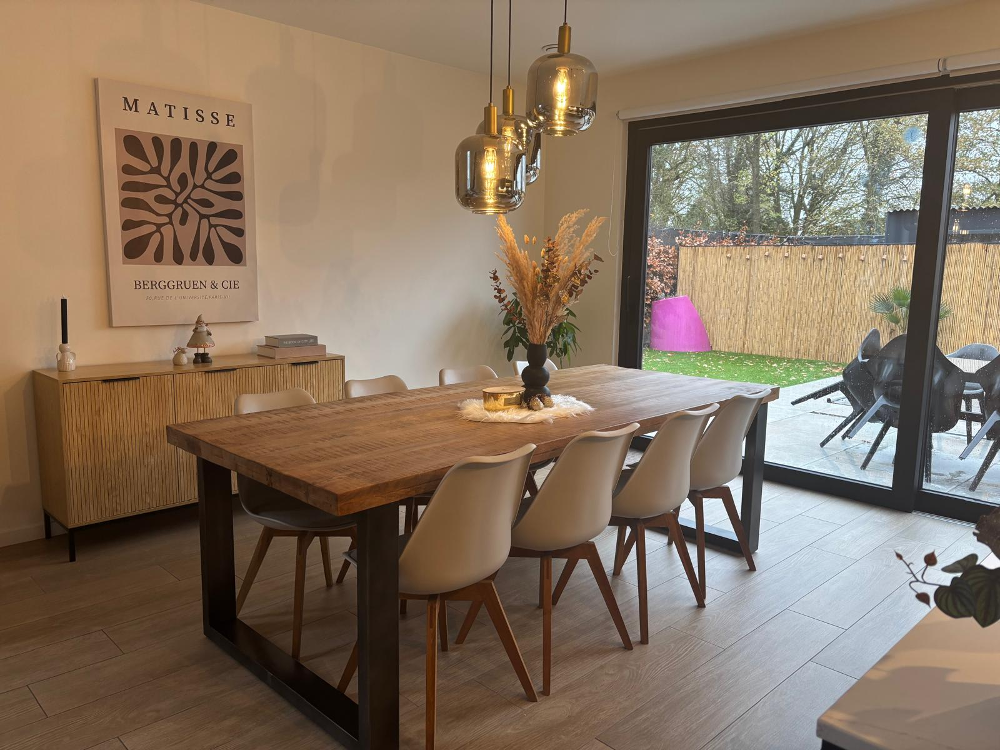

Interieur
Sfeervol & Compleet Ingericht

Chef-waardige Keuken
Kookeiland, inductie, oven en alle benodigdheden voor een culinaire avond.

Gezellig Tafelen
Ruime eettafel om samen te genieten van ontbijt, lunch of diner.

Rustgevende Nachten
Hoogwaardige boxsprings en verduistering voor een perfecte nachtrust.